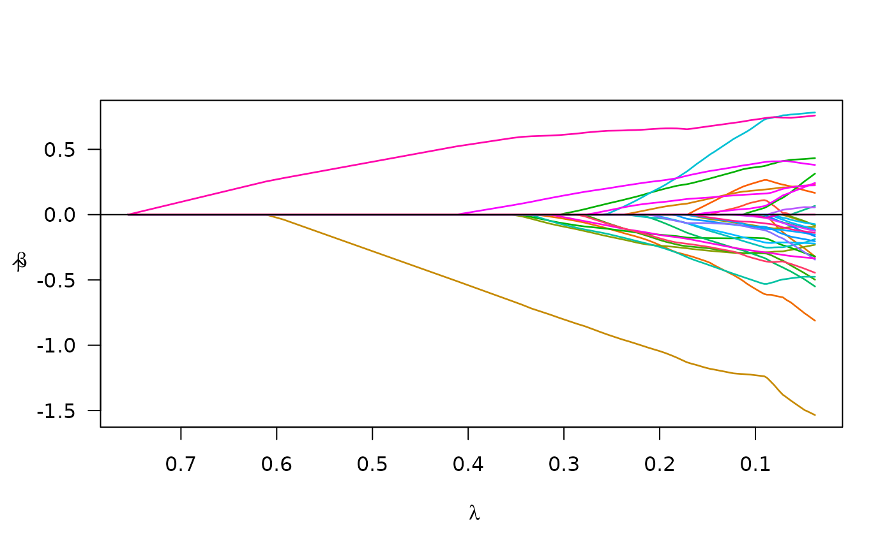
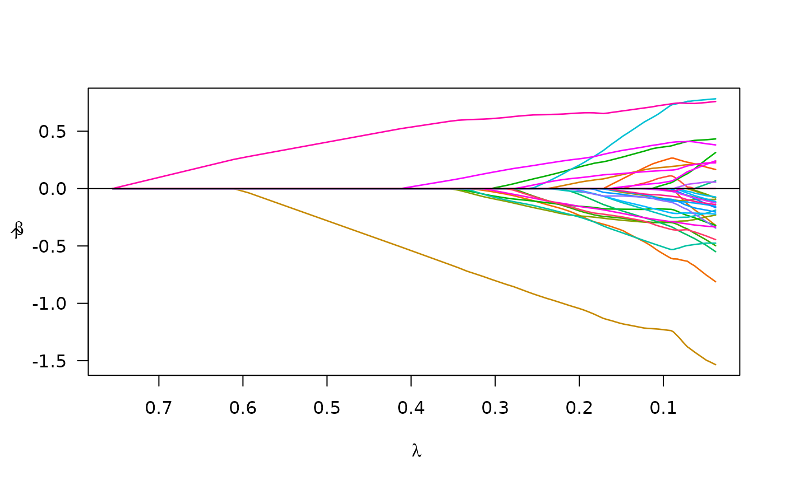

Fit a linear mixed model with non-convex regularization
plmm.RdThis function allows you to fit a linear mixed model via non-convex penalized maximum likelihood. NB: this function is simply a wrapper for plmm_prep -> plmm_fit -> plmm_format
Usage
plmm(
X,
y = NULL,
col_names = NULL,
non_genomic = NULL,
K = NULL,
diag_K = NULL,
eta_star = NULL,
penalty = "lasso",
penalty_factor = NULL,
init = NULL,
gamma,
alpha = 1,
dfmax = NULL,
lambda_min,
nlambda = 100,
lambda,
eps = 1e-04,
max_iter = 10000,
convex = TRUE,
warn = TRUE,
trace = FALSE,
save_rds = NULL,
compact_save = FALSE,
return_fit = TRUE,
...
)Arguments
- X
Design matrix object or a string with the file path to a design matrix. If a string, string will be passed to
get_data(). * Note: X may include clinical covariates and other non-SNP data, but no missing values are allowed.- y
Numeric outcome vector. Defaults to NULL, assuming that the outcome is the 6th column in the .fam PLINK file data. Can also be a user-supplied numeric vector.
- col_names
Optional vector of column names for design matrix. Defaults to NULL. For cases where X is a filepath to an object created by
process_plink(), this is handled automatically via the arguments toprocess_plink().- non_genomic
Optional vector specifying which columns of the design matrix represent features that are not genomic, as these features are excluded from the empirical estimation of genomic relatedness. For cases where X is a filepath to an object created by
process_plink(), this is handled automatically via the arguments toprocess_plink(). For all other cases, 'non_genomic' defaults to NULL (meaningplmm()will assume that all columns ofXrepresent genomic features).- K
Similarity matrix used to rotate the data. This should either be: (1) a known matrix that reflects the covariance of y, (2) an estimate (Default is \(\frac{1}{p}(XX^T)\)), or (3) a list with components 'd' and 'U', as returned by a previous
plmm()model fit on the same data.- diag_K
Logical: should K be a diagonal matrix? This would reflect observations that are unrelated, or that can be treated as unrelated. Defaults to FALSE. Note: plmm() does not check to see if a matrix is diagonal. If you want to use a diagonal K matrix, you must set diag_K = TRUE.
- eta_star
Optional argument to input a specific eta term rather than estimate it from the data. If K is a known covariance matrix that is full rank, this should be 1.
- penalty
The penalty to be applied to the model. Either "lasso" (the default), "SCAD", or "MCP".
- penalty_factor
A multiplicative factor for the penalty applied to each coefficient. If supplied, penalty_factor must be a numeric vector of length equal to the number of columns of X. The purpose of penalty_factor is to apply differential penalization if some coefficients are thought to be more likely than others to be in the model. In particular, penalty_factor can be 0, in which case the coefficient is always in the model without shrinkage.
- init
Initial values for coefficients. Default is 0 for all columns of X.
- gamma
The tuning parameter of the MCP/SCAD penalty (see details). Default is 3 for MCP and 3.7 for SCAD.
- alpha
Tuning parameter for the Mnet estimator which controls the relative contributions from the MCP/SCAD penalty and the ridge, or L2 penalty. alpha=1 is equivalent to MCP/SCAD penalty, while alpha=0 would be equivalent to ridge regression. However, alpha=0 is not supported; alpha may be arbitrarily small, but not exactly 0.
- dfmax
(future idea; not yet incorporated) Upper bound for the number of nonzero coefficients. Default is no upper bound. However, for large data sets, computational burden may be heavy for models with a large number of nonzero coefficients.
- lambda_min
The smallest value for lambda, as a fraction of lambda.max. Default is .001 if the number of observations is larger than the number of covariates and .05 otherwise.
- nlambda
Length of the sequence of lambda. Default is 100.
- lambda
A user-specified sequence of lambda values. By default, a sequence of values of length nlambda is computed, equally spaced on the log scale.
- eps
Convergence threshold. The algorithm iterates until the RMSD for the change in linear predictors for each coefficient is less than eps. Default is
1e-4.- max_iter
Maximum number of iterations (total across entire path). Default is 10000.
- convex
(future idea; not yet incorporated)Calculate index for which objective function ceases to be locally convex? Default is TRUE.
- warn
Return warning messages for failures to converge and model saturation? Default is TRUE.
- trace
If set to TRUE, inform the user of progress by announcing the beginning of each step of the modeling process. Default is FALSE.
- save_rds
Optional: if a filepath and name without the '.rds' suffix is specified (e.g.,
save_rds = "~/dir/my_results"), then the model results are saved to the provided location (e.g., "~/dir/my_results.rds"). Defaults to NULL, which does not save the result.- compact_save
Optional: if TRUE, three separate .rds files will saved: one with the 'beta_vals', one with 'K', and one with everything else (see below). Defaults to FALSE. Note: you must specify
save_rdsfor this argument to be called.- return_fit
Optional: a logical value indicating whether the fitted model should be returned as a
plmmobject in the current (assumed interactive) session. Defaults to TRUE.- ...
Additional optional arguments to
plmm_checks()
Value
A list which includes:
beta_vals: the matrix of estimated coefficients on the original scale. Rows are predictors, columns are values oflambdarotated_scale_beta_vals: the matrix of estimated coefficients on the ~rotated~ scale. This is the scale on which the model was fit.lambda: a numeric vector of the lasso tuning parameter values used in model fitting.eta: a number (double) between 0 and 1 representing the estimated proportion of the variance in the outcome attributable to population/correlation structurerot_y: the vector of outcome values on the rotated scale. This is the scale on which the model was fit.linear_predictors: the matrix resulting from the product ofstdrot_Xand the estimated coefficients on the ~rotated~ scale.penalty: character string indicating the penalty with which the model was fit (e.g., 'MCP')gamma: numeric value indicating the tuning parameter used for the SCAD or lasso penalties was used. Not relevant for lasso models.alpha: numeric value indicating the elastic net tuning parameter.loss: vector with the numeric values of the loss at each value oflambda(calculated on the ~rotated~ scale)penalty_factor: vector of indicators corresponding to each predictor, where 1 = predictor was penalized.ns_idx: vector with the indices of predictors which were constant features (i.e., had no variation).p: the number of featuresn: the number of observations (instances)iter: numeric vector with the number of iterations needed in model fitting for each value oflambdaconverged: vector of logical values indicating whether the model fitting converged at each value oflambdaK: a list with 2 elements,sandU—s: a vector of the eigenvalues of the genomic relatedness matrix; seerelatedness_mat()for details.U: a matrix of the eigenvectors of the genomic relatedness matrix
Examples
# using admix data
fit_admix1 <- plmm(X = admix$X, y = admix$y)
s1 <- summary(fit_admix1, idx = 50)
print(s1)
#> lasso-penalized regression model with n=197, p=101 at lambda=0.01380
#> -------------------------------------------------
#> The model converged
#> -------------------------------------------------
#> # of non-zero coefficients: 85
#> -------------------------------------------------
plot(fit_admix1)
 # an example with p > n:
fit_admix2 <- plmm(X = admix$X[1:50, ], y = admix$y[1:50])
s2 <- summary(fit_admix2, idx = 99)
print(s2)
#> lasso-penalized regression model with n=50, p=101 at lambda=0.0389
#> -------------------------------------------------
#> The model converged
#> -------------------------------------------------
#> # of non-zero coefficients: 40
#> -------------------------------------------------
plot(fit_admix2) # notice: the default penalty is MCP

# Note: for examples with large data that are too big to fit in memory,
# see the article "PLINK files/file-backed matrices" on our website
# https://pbreheny.github.io/plmmr/articles/filebacking.html
# an example with p > n:
fit_admix2 <- plmm(X = admix$X[1:50, ], y = admix$y[1:50])
s2 <- summary(fit_admix2, idx = 99)
print(s2)
#> lasso-penalized regression model with n=50, p=101 at lambda=0.0389
#> -------------------------------------------------
#> The model converged
#> -------------------------------------------------
#> # of non-zero coefficients: 40
#> -------------------------------------------------
plot(fit_admix2) # notice: the default penalty is MCP

# Note: for examples with large data that are too big to fit in memory,
# see the article "PLINK files/file-backed matrices" on our website
# https://pbreheny.github.io/plmmr/articles/filebacking.html